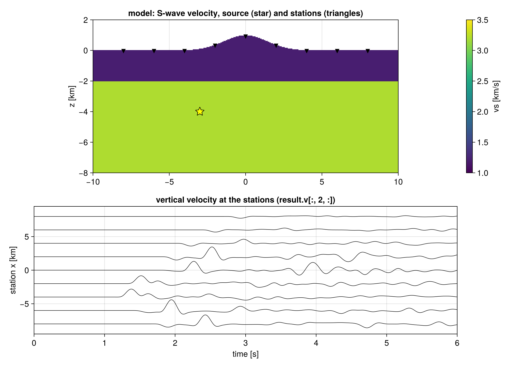
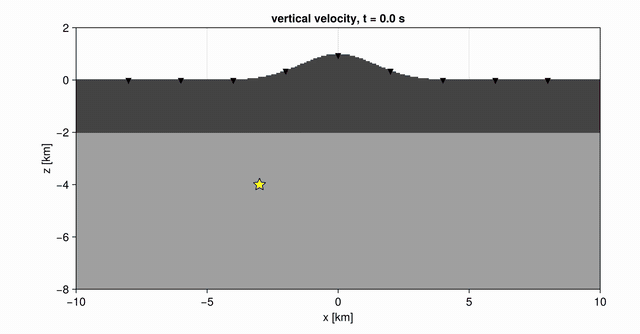

Getting started
A 2D simulation of an earthquake below a hill. The model is a GeophysicalModelGenerator.jl (GMG) CartData with the fields rho [kg/m³], vp, vs [km/s] and (optionally) Qp, Qs; cells with vp = vs = 0 are air.
using SeismicWavePC, GeophysicalModelGenerator
# 2D model (size nx × 1 × nz) in km, z up
x, z = range(-10, 10, length=400), range(-8, 2, length=201)
model = CartData(xyz_grid(x, 0, z))
Phase, Temp = fill(2, size(model)), zeros(size(model)) # 2: crust
add_layer!(Phase, Temp, model; zlim=(-2, 2), phase=ConstantPhase(1)) # 1: sediments
X, _, Z = xyz_grid(x, 0, z)
Phase[Z .> exp.(-(X ./ 2) .^ 2)] .= 0 # 0: air above a 1 km high hill
rho = [1.0, 2200.0, 2700.0][Phase .+ 1]; vp = [0.0, 2.5, 5.5][Phase .+ 1]; vs = [0.0, 1.2, 3.2][Phase .+ 1]
model = addfield(model, (; rho, vp, vs, Qp=fill(200.0, size(X)), Qs=fill(100.0, size(X))))
source = DoubleCoupleSource(-3.0, 0.0, -4.0; Mw=3.5, strike=0, dip=45, rake=90, trise=0.4)
stations = [Station("S$i", xs, 0.0, 0.0; surface=true) for (i, xs) in enumerate(-8:2:8)]
result = simulate(model; dt=0.004, nt=1500, sources=source, stations)SeismicWavePC: PSV, 400×201 cells (dx = 0.05013, 0.05 km), 1500 steps of 0.004 s, Courant number 0.617
1 source(s) (M0 = 1.995e+14 N m), 9 station(s), backend CPU (4 threads), Float32, 1 MPI rank(s)
step 150/1500 t = 0.6000 s max|v| = 7.658e+00 m/s
…
finished in 0.88 s
Seismograms: 9 station(s), 1500 samples, t = 0.0 … 5.996 s, components x, z
S1 max |v| = 4.988e+00, 6.250e+00 m/s
…
final wavefield: CartData of size (400, 1, 201)
result["S1"]returns the velocities of a station,result.v[it, component, station]all of them (result.tare the times), andresult.u,result.stress,result.strainthe displacement, stress and strain.result.wavefieldis the velocity field at the end, as aCartData(write_paraview(result.wavefield, "final")).- The same script runs in 3D with a 3D
CartData, on a GPU withbackend=CUDABackend(), and on several MPI processes withnproc(see Running simulations).
To plot the wavefield while the simulation runs, pass a callback:
using CairoMakie
fig, ax, hm = heatmap(x, z, zeros(length(x), length(z)), colormap=:balance)
movie = VideoStream(fig)
function frame(wavefield, t)
hm[3] = wavefield.fields.V[3][:, 1, :] # vertical velocity
recordframe!(movie)
end
simulate(model; dt=0.004, nt=1500, sources=source, stations, snapshot_every=20, callback=frame)
save("waves.mp4", movie)
The vertical velocity over the model (here with the waves transparent where they are weak): P and S waves from the earthquake (star), reflected and converted at the base of the sediments and at the free surface, and scattered by the hill.